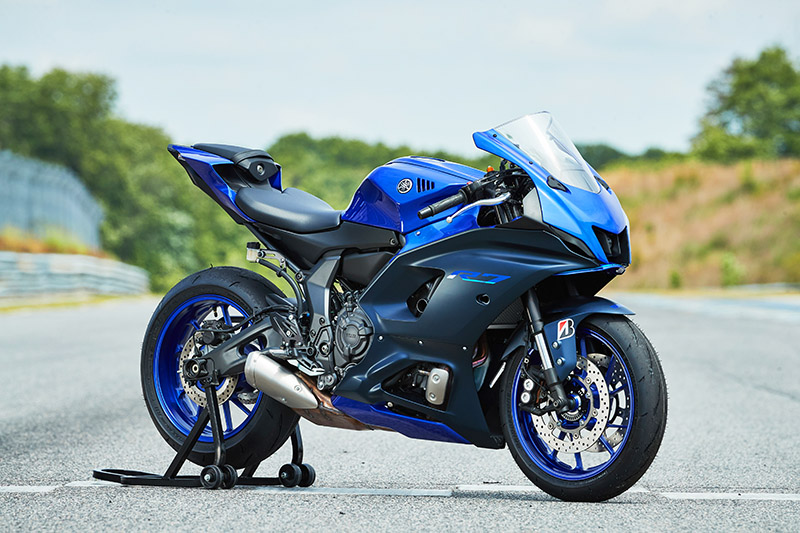
Middleweight
Bikes like the Yamaha R7 balance sharp styling, usable power, and strong everyday handling.
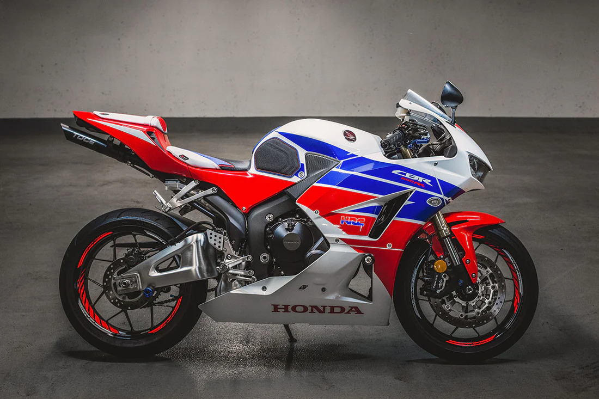
WDD 331R Advanced CSS
A custom showcase site focused on modern supersport and superbike machines, built to demonstrate responsive layout, motion, visual polish, and advanced CSS techniques.
Modern sport bikes range from lightweight middleweights to full-power superbikes built for speed, precision, and aggressive styling.

Bikes like the Yamaha R7 balance sharp styling, usable power, and strong everyday handling.
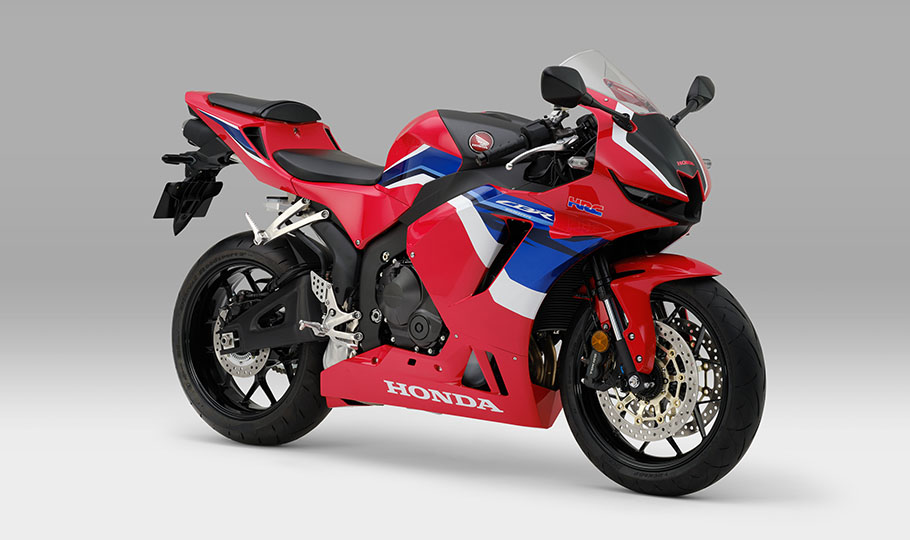
Supersport bikes such as the Honda CBR600RR are light, aggressive, and built around precision.
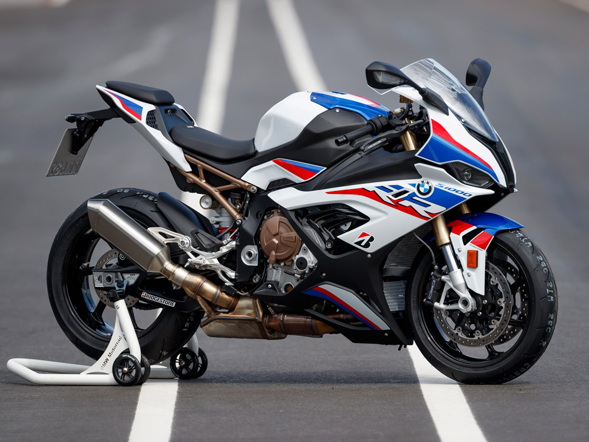
Superbikes like the BMW S1000RR bring serious horsepower, electronics, and race-inspired engineering.
These current sport bikes stand out for performance, styling, and modern technology.
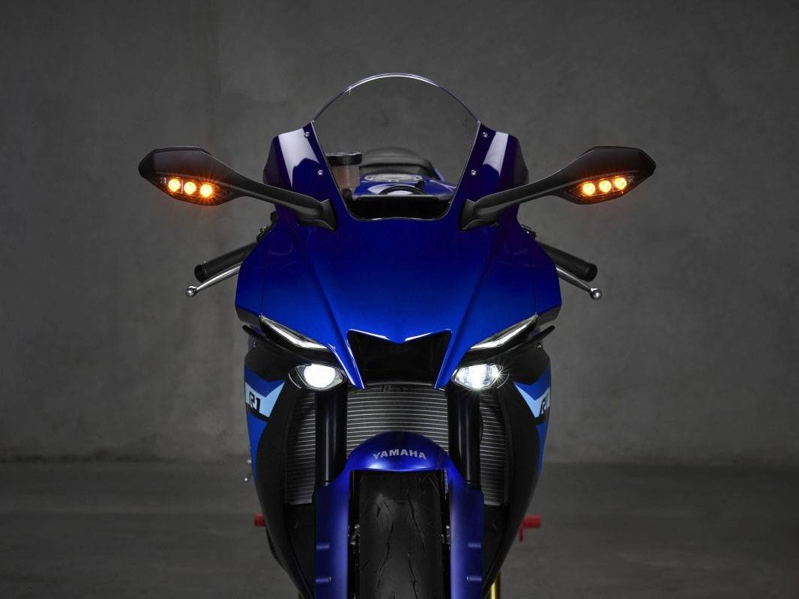
A high-performance superbike with aggressive aerodynamics, advanced electronics, and track-focused styling.
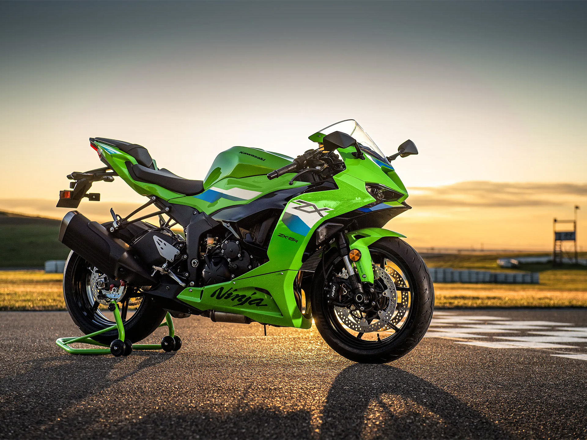
A modern supersport known for strong midrange power, aggressive bodywork, and everyday sport riding appeal.
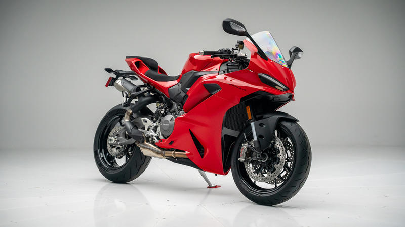
A premium Italian sport bike with striking styling, smooth power delivery, and serious cornering presence.
This horizontal gallery demonstrates scroll snap and responsive visual presentation.
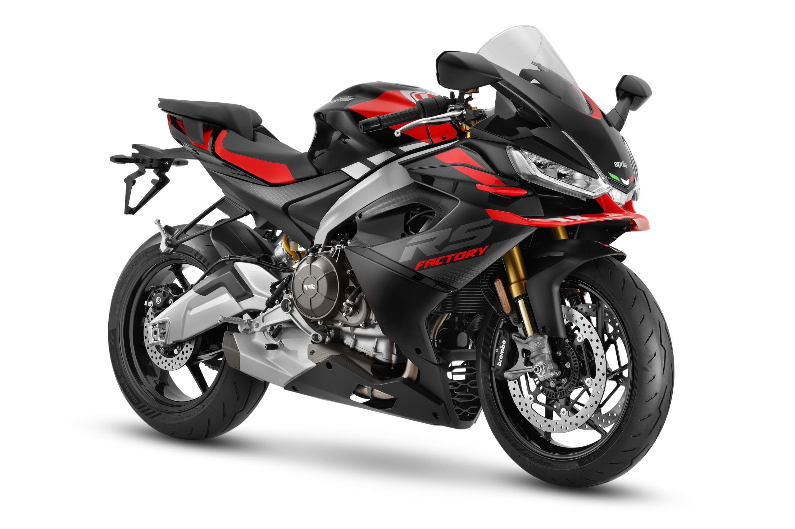
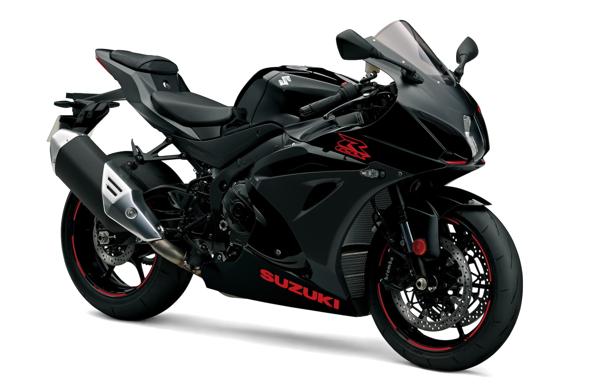
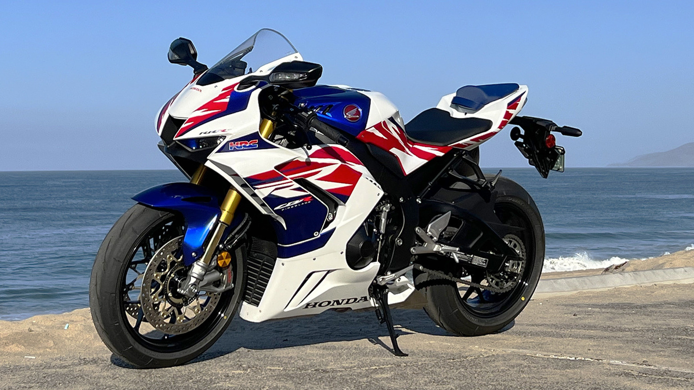
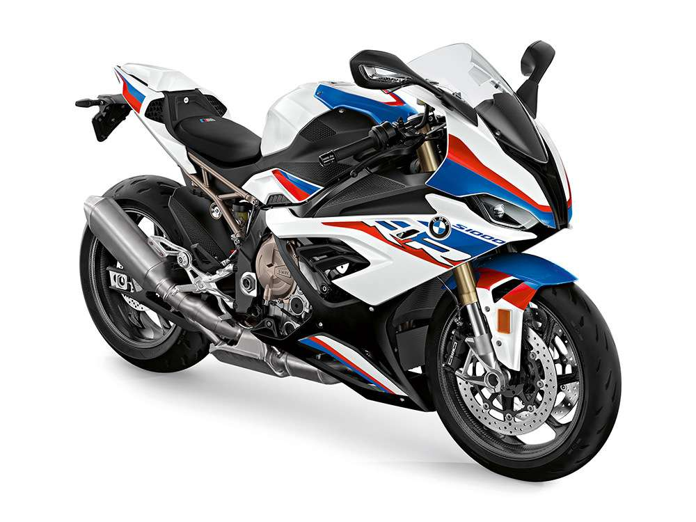
Modern sport bikes combine power, lightweight design, electronics, and aerodynamic shaping for better control and speed.
New sport bikes use compact, high-revving engines built for acceleration and strong top-end performance.
Aluminum chassis designs help improve handling, agility, and rider confidence through corners.
Rider modes, traction control, quickshifters, and aerodynamic bodywork all help modern bikes feel faster and more stable.
This site demonstrates custom properties, organized CSS files, Flexbox and Grid layout, grid-template-areas in the featured section, scroll snap gallery behavior, layered gradients, transforms, responsive typography, inline SVG usage, and reduced-motion support.